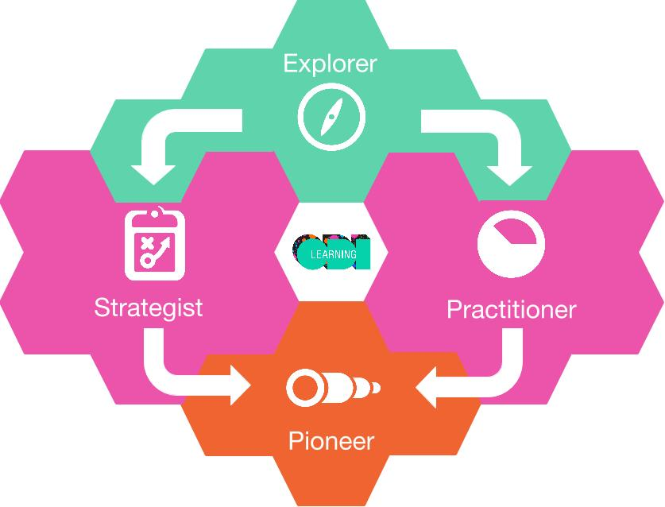

Three steps to becoming a data-literate leader
The web of data is growing fast, and leaders need to know how their organisation can adapt. This starts with being data literate – understanding data in relation to their organisation, how to interact with it and what impact it can have
Image: Pixabay, Public domain, (CC0 1.0)
From multinationals like Thomson Reuters to start-ups like Geolytix, businesses are embracing data as a core component of strategy, innovation and product development. Some organisations and sectors are well poised to take advantage of these new opportunities, while others are at risk of being marginalised or destroyed. Leaders need to make sure they are ready for the web of data.
It's been 27 years since our co-founder Sir Tim Berners-Lee invented the web, and even now it is still evolving. The driving force behind the web's current stage of development is data – specifically, using web technologies to create a myriad of connections between different bits of data.
When a major transition happens, organisations that move too slowly (or in the wrong direction) rarely emerge unscathed. In the late 90s, Kodak saw that the web and digital technologies were changing the way people shared photos. Stuck in a physical paradigm largely dictated by their existing infrastructure, their reaction was to focus new investment on digital printing, ignoring the sharing potential of the web. Startups like Instagram and Facebook subsequently captured the desire to share our lives through photos, while Kodak went bankrupt in 2012.
Companies like Uber and AirBnB are taking market share from established operators because they don’t focus on physical infrastructure. They focus on creating and owning the data infrastructure in their respective sectors – the data-driven connections between customers, suppliers and payments. And in finance, an industry that has always been about data, startup banks like Monzo focus on helping you use your data to better manage your money through features like the live visualisation of spend, delivered through an intuitive app-based interface. While Uber’s trading losses of $1.2B in the first half of 2016 show it’s a model that still needs work, their undeniable impact suggests that leaders can’t ignore what’s happening.
Three simple steps to becoming more data literate
1. Realise what data literacy means to you
 The Open Data Skills Framework
We define data literacy as: "the ability to understand data, how you can interact with it and what impact it can have". As a leader, you need to unpick each element in this definition. This means assessing your current ability to understand data and interact with it, and then exploring the impact that data is having on what you and your organisation do.
The ODI’s Open Data Skills Framework can help here. It helps you to identify skills you need and the ways to go about developing them. The framework is split into four sections, starting with 'data explorer'. Leaders should at least be at this level: able to understand different forms of data and how data is being used in business and government. Most leaders will need to go beyond these foundational skills. We suggest they pursue the ‘strategist’ path: building skills that will allow them to seize new opportunities with data and lead change.
2. Think outside your own company
Image: Pixabay, Public domain, (CC0 1.0)
As a leader, you need to be aware of how data is changing your sector. For this, you need to scan a broad horizon, as disruption might not come from your classic competitors.
In our Business Innovation Workshop, leaders use tools like the 'business model canvas' to find new opportunities across their business, customer network and supply chain. But you should also be aware that reacting to threats or taking advantage of opportunities might require a complete change in the way that you and your organisation think about things.
This is why larger organisations are taking novel approaches to data strategy. Thomson Reuters developed and openly shared a core data asset which now allows its ecosystem to function better for everyone, including competitors and clients. Arup made a conscious decision to embrace open data by hosting open data startups in its offices to share ideas and co-develop business opportunities.
Finally we’d suggest looking at how startups are addressing the sector you work in. With a remit and freedom to innovate and disrupt, they are a great source of inspiration. In fact we’d recommend going beyond that and going to visit them. Most are happy to exchange ideas and insights, and explore ways to collaborate with more established peers.
3. Consider the skills of your whole network
Image: ODI Trainer Ben Cave
Leading UK supermarket chain Sainsbury’s is working with the ODI to build data-literate leaders across both its business and its key suppliers, bringing them together for a series of training and mentoring workshops. By investing in leadership data skills and focusing on collaborative problem solving, Sainsbury’s is taking an active role in ensuring that the crucial components of its data infrastructure have what they need to take advantage of the web of data.
As your business becomes more data-led and more porous, you will be reliant on the capacity of both your internal organisation and your external network to make real progress. The Skills Framework can help here too. Depending on your organisation, strategy and products, you are likely to need a blend of data skills encompassing the entire framework.
Most people in a network will need to have a fundamental understanding of the role that data plays in their work and the impact it will have. You’ll then need a mix of people with practical data skills, including the specialisms most commonly associated with data: data science and data visualisation.
What is often neglected, however, is the leadership, change and innovation skills required to forge new ways of working and act on new opportunities. These are described in the ‘Strategist’ domain in the skills framework, and enable you to take a network view of your data infrastructure, understand that data needs to flow and create value across your internal organisation, your clients, partners and suppliers.
If you’re leading in your sector as well as driving change in your own business, you may need to consider how to drive change across your entire network.
Are you ready to become a data literate leader?
If you’ve read this far, you might be wondering what you should be doing to improve your business model accordingly, particularly if you’re not like Uber and can’t afford to take a billion-dollar hit while you tinker with it.
Much of our work at the ODI involves spending time with leaders who are asking themselves similar questions. They can see change coming and want to know what to do next.
To help make sense of what’s happening and find ways for leaders to move forward, the ODI has spent the last three years researching the impact of data on industry and people. Our research draws on our work helping leaders around the world drive data-led change, evidence built through more than 100 interviews conducted into the need for data skills in Europe, and our investigations into what open data means for business.
If you’d like to discuss how we can help you to develop the right skills to take your data strategy further, get in touch.
Simon Bullmore is Head of Learning at the ODI. Follow @SimonBullmore on Twitter.